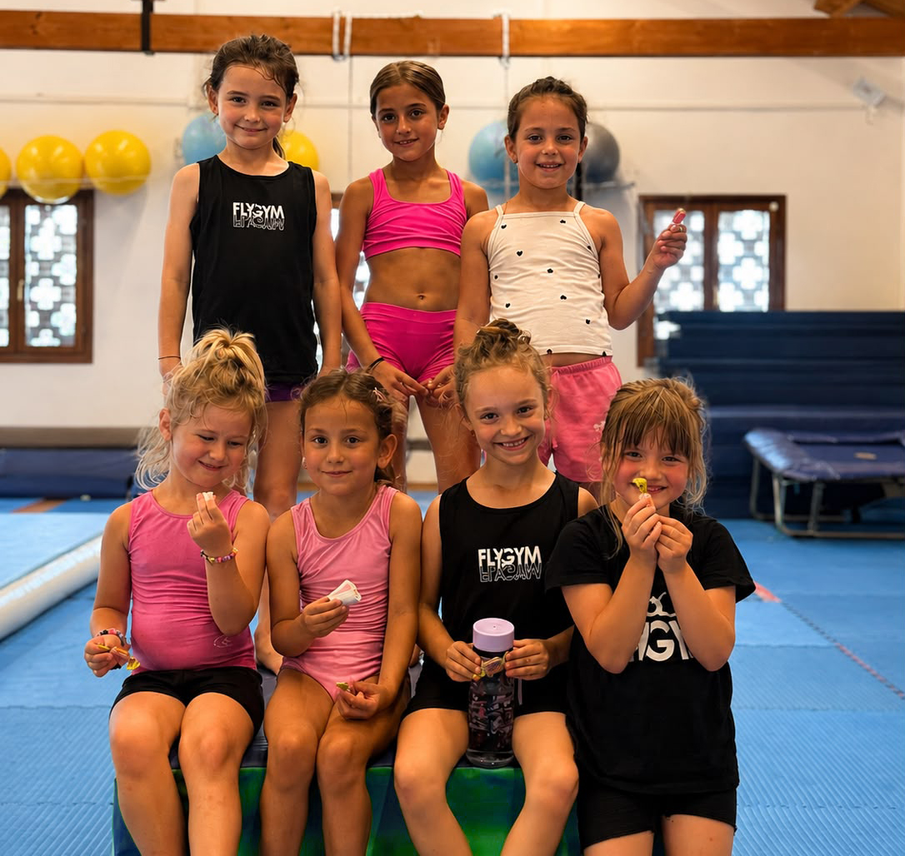

Gioco · Movimento · Scoperta
Baby Gym.
I primi passi nel movimento attraverso attività divertenti, sicure e pensate per crescere con il sorriso.
Imparare giocando
Scoprire il proprio corpo.
Baby Gym avvicina i più piccoli all'attività motoria attraverso percorsi, giochi e semplici esercizi. Ogni proposta incoraggia curiosità, autonomia e fiducia rispettando i tempi di ciascun bambino.
In un ambiente accogliente, il movimento diventa un modo naturale per conoscere lo spazio, relazionarsi con gli altri e costruire solide basi motorie.
Crescere in movimento
I benefici della Baby Gym.
Motricità
Sviluppa gli schemi motori fondamentali.
Autonomia
Incoraggia iniziativa e sicurezza personale.
Equilibrio
Migliora stabilità e controllo del corpo.
Attenzione
Allena ascolto e comprensione delle consegne.
Relazioni
Favorisce il gioco con compagni e istruttori.
Divertimento
Associa lo sport a un'esperienza positiva.
Scegli la sede e l'orario
Orari dei corsi Baby Gym.
Consulta i giorni e gli orari disponibili nelle quattro sedi Fly Gym.
01
San Stino di Livenza
Baby Gym
PomeriggioLunedì e venerdì
Richiedi informazioni02
Fossalta di Portogruaro
Baby Gym
PomeriggioMercoledì e venerdì
Richiedi informazioni03
Oderzo
Baby Gym
PomeriggioGiovedì
Richiedi informazioni04
Caorle
Baby Gym
PomeriggioLunedì e mercoledì
Richiedi informazioniAllenati vicino a te
Baby Gym in tutte le sedi.
Scegli la sede Fly Gym più comoda per iniziare il percorso.
San Stino di Livenza
Via Gallo 12, 30029 Corbolone (VE)Apri in Google Maps →Fossalta di Portogruaro
Via Ippolito Nievo 20, 30025 Fossalta di Portogruaro (VE)Apri in Google Maps →Caorle
Strada San Giorgio 16, 30021 Caorle (VE)Apri in Google Maps →Oderzo
Via Verdi 69/B, 31046 Oderzo (TV)Apri in Google Maps →Una nuova avventura
Vieni a provare Baby Gym.
Scopri un ambiente pensato per muoversi, giocare e crescere.